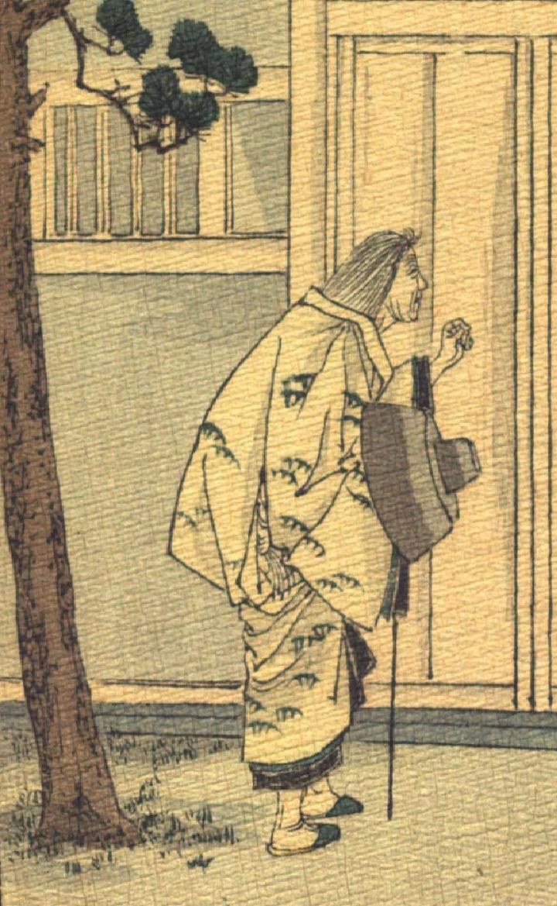

旅装束の老婆。鬼が化けた姿である。白髪を長く伸ばし、松のような模様が入った打掛をまとい、足袋と草履をはいている。腰を屈めて、門扉の前に立ち、右手に市女笠と杖を持ち、左手で扉を叩こうとしている。
著作者：J.Dautremer／出典：親書誌：U426_nichibunken_0121：Le bras de l'ogre／日付：2003／資源識別子：U426_nichibunken_0121_0003_0000
Copyright (c)2010- International Research Center for Japanese Studies, Kyoto, Japan. All rights reserved.